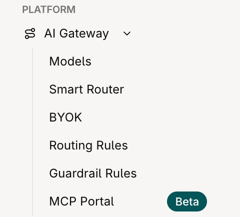
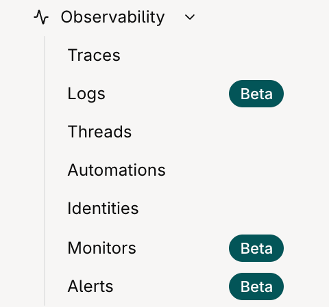
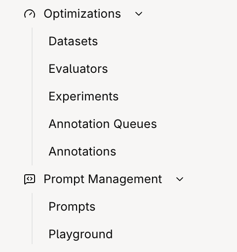
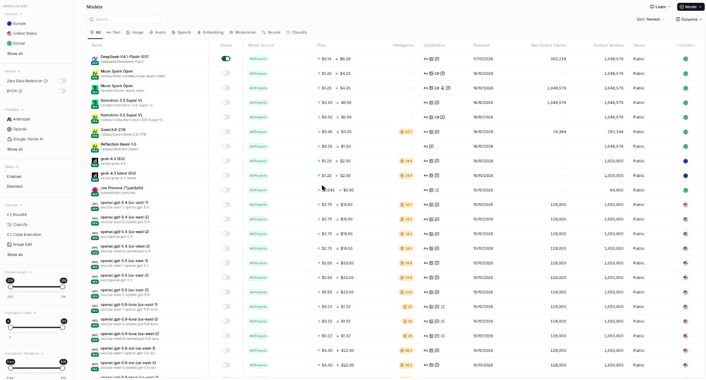
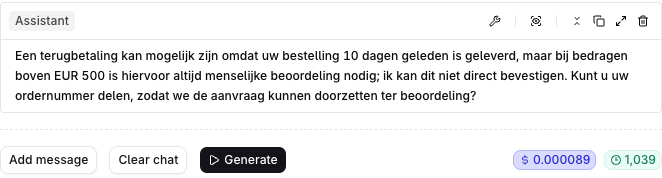
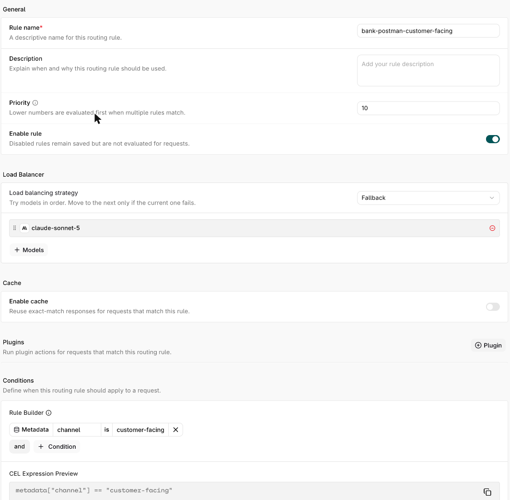
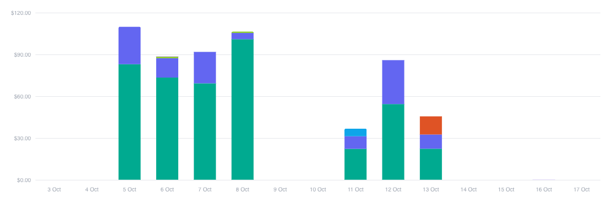
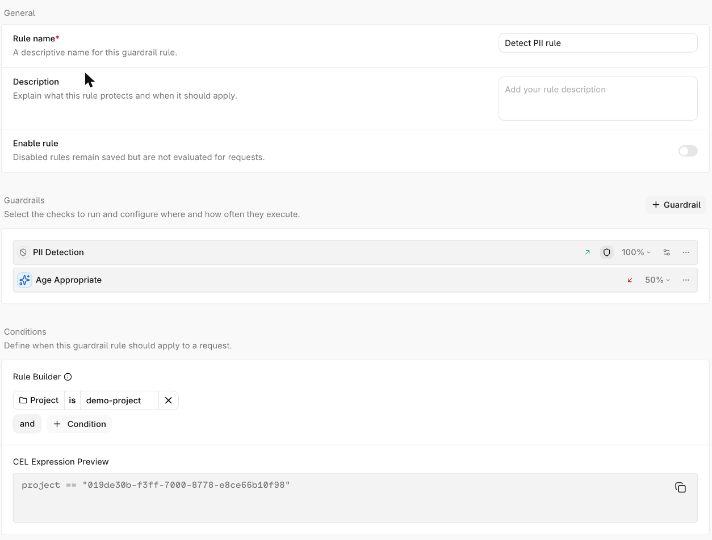
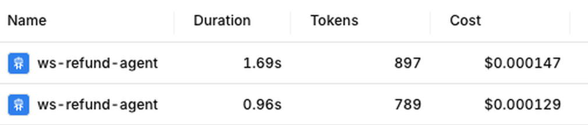
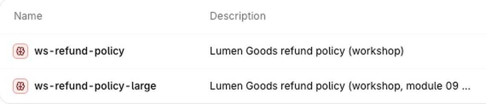

Building agents with orq.ai
Four days on site. Platform first, then agents, evals and your own use cases.
Bauke Brenninkmeijer · orq.ai
Bauke Brenninkmeijer
Your trainer for the technical days, from orq.ai.
Hands-on
Short explanations, then you do it in Studio, the CLI or code.
Questions any time, and 5 minutes after every practical.
Today and tomorrow
Day 1 is the platform. Day 2 is agents, then a hackathon on your use cases.
DAY 1 Mon 19 Oct · Platform and IT controls
MORNING · 09:00- Platform overview and set-up
- Platform options and agent basics
- Model access: Europe and ZDREXERCISE
- Gateway resilience and tracing
- Keys, roles and audit logsEXERCISE
- Budgets and spend
- Guardrails and PIIEXERCISE
DAY 2 Tue 20 Oct · Agents, then build
MORNING · 09:00- Build a generic agent
- Knowledge bases and retrievalEXERCISE
- MCP gateway: expose and hide toolsEXERCISE
- Build from your coding assistant
- Kickoff: your use cases
- Build: your first agents
- Evals and LLM-as-judge
- Demos and review
Each exercise is 10-15 minutes, followed by 5 minutes for questions.
Day 1: the platform
Only what the master deck does not already cover.
- The platform mapHow Studio, CLI and evaluatorq relate, and where orq.ai runs.
- Tools, loops and MCP in orq.aiWho runs a tool, who owns the loop, and why MCP goes through a gateway.
- Models and the gatewayModel Garden, EU and ZDR filters, routing, fallbacks.
- IT controlsRoles, SSO, keys, audit logs, budgets, usage, guardrails, traces.
- MCP, knowledge, agents and CLIThe pieces Day 2 builds on.
Already in the master deck
Not repeated here. Open the master deck for these.
| Topic | Master deck slides |
|---|---|
| LLM basics, automation vs workflow vs agent | 10-11 |
| Tools | 12-14 |
| Model parameters | 15-27 |
| Orqflow, Smart Router, observability, governance | 29-37 |
| Guardrails and PII redaction | 68-75 |
| Evaluators, experiments, annotation | 76-85, 102 |
| Agents and sub-agents | 95-101 |
Platform map: how the pieces connect
Your code and your coding agent both call the same gateway.
orange = call into the AI Gateway · solid = internal call · dashed = return or passive
Platform map: who uses which tool
One workspace and shared traces; Studio login and API keys serve different jobs.
The Studio sidebar
Five folders. Closed on the left, opened on the right.





Four capability areas
A mental map of what the platform does; menu labels may differ.
Where orq.ai runs
Choose where the platform runs, then choose approved model routes.
EU SaaS
orq.ai hosts the platform in the EU.
Fastest start. Nothing to install.
Your VPC
Runs inside your own AWS or Azure account.
Model data follows the provider route you select.
On-premise
Runs on customer infrastructure.
Installed with supplier-provided Helm charts and guidance.
The platform Order Form covers the licence and managed service.
Tools: who runs them
Code tools run in orq.ai. Function tools run in your process. MCP tools run on a server you register.
Python registered in orq.ai. One request runs the whole loop.
USE IT WHENThe logic can live in orq.ai.
Your code runs it and sends the result back to the model.
USE IT WHENThe tool must reach your own database or private API, or needs your own approval step.
 MCP · RUNS ON AN MCP SERVER
MCP · RUNS ON AN MCP SERVER
Register the server in orq.ai. Agents get its tools through the MCP Gateway.
USE IT WHENThe tools already exist as an MCP server, yours or a vendor's.
The Responses tool loop
The model asks, your app runs the tool, and the result goes back until no tool call is left.
Local app owns the loop and resends all items with store: false.
Who owns the loop
Same tools on every path. What changes is who runs the loop and holds state.
store: falseprevious_response_idAll three use the workshop model from .env. Gateway routing and tracing apply; request controls such as cache apply when configured.
MCP vs MCP Gateway
MCP is the tool protocol. The gateway controls access to it.
With the MCP Gateway
MCP: the trust chain
The client calls the gateway, which calls the registered MCP server.
Why a gateway sits in front
External MCP clients use the Gateway; managed agents attach to the registered Server directly.
Gateway clients see only exposed tools. Hidden tools are absent from tools/list; a direct call returns not found.
❯ orq mcp-gateways list-tools <gateway-id> -o json
exposed name ← server_key/upstream_tool_name
tool_a ← my-server/tool_a
tool_b ← my-server/tool_b
# call a hidden tool through the gateway
MCPError: tool "hidden_tool" not foundChoose the model before anyone builds
Catalog filters help you compare. Enforcement and project access decide who can call a model.
Provider ZDR and orq.ai trace retention are separate controls.
Model Garden: the full catalogue
Filters on the left, one row per model, with price, intelligence index, capabilities and location.

Model Garden: Europe and ZDR
These filters narrow the catalogue. They do not restrict model calls.

Playground: compare configurations
The same question on two models. Check prompts and settings before comparing answers.


Prove the model access boundary
Test workspace enforcement and project sharing independently.
| Check | Action | Evidence to capture |
|---|---|---|
| Approved route | Call an enabled model from the test project. | ALLOWSuccessful response and its trace. |
| Unenabled model | With workspace enforcement on, call a model not enabled for the workspace. | DENYHTTP error; trace if recorded. |
| Project access | Call an enabled model from a project excluded by its Custom access control. | DENYHTTP error; trace if recorded. |
| Configuration | Read back workspace enablement, enforcement, and Custom project sharing. | Settings views showing each control. |
A catalogue filter or Playground comparison does not prove access enforcement.
Exercise: limit the test project to Europe and ZDR
Apply the filters, restrict the pool, then try to step outside it.
- Open AI Gateway › Models and switch on the Europe location and Zero Data Retention filters.
- Note which models remain in the pool.
- Restrict the test project to that pool.
- Call a model outside the pool from the Playground or the API.
AI Gateway: key concepts
Four gateway controls and the span that records them.
- CacheAn exact repeat is served from cache, avoiding provider cost.
- Load balancingWeights like 50/50 set proportions; short runs may not split evenly.
- SpanOne step in a trace, such as a model call or a fallback decision.
Routing rules: key concepts
The first matching active rule takes precedence over the requested model.

- PriorityLower numbers are evaluated first.
- Enable ruleDisabled rules are saved, never evaluated.
- Load balancing strategyFallback, latency, weight or round-robin.
- CacheReuse exact-match responses.
- PluginsExtra actions on matching requests.
- ConditionsHeaders, identity, metadata, model or project, as a CEL expression.
Live check: match an active rule; inspect the chosen target in its trace.
Workspace governance: key concepts
Review the workspace, project and Enterprise controls with your admin.
Enterprise plan or add-on
Roles: what you can and cannot do
Developer is the workshop role: build, test and deploy within the projects you can access.
| Capability | Researcher | Developer | Admin |
|---|---|---|---|
| Playgrounds and Experiments | Full access | Full access | Full access |
| Knowledge bases: create, edit, delete | Yes | Yes | Yes |
| Agents: create, edit, delete | No · view only | Yes | Yes |
| View traces / review and annotate logs | Yes | Yes | Yes |
| Modify Deployments / deploy changes | No | Yes | Yes |
| Manage models | No | No | Yes |
| Manage members and roles | No | No | Yes |
| Manage billing / workspace settings | No | No | Yes |
Role sets what you may do. Teams and project permissions set where you may work. Researchers can manage knowledge bases and inspect traces; Agents are view-only and Deployments cannot be modified.
API keys: modes and service keys
A standard API key belongs to one project; choose its permission mode within that project.
| Credential / mode | Scope | Use |
|---|---|---|
| ALL | Selected project | All supported resources and actions in that project. |
| READ_ONLY | Selected project | Read access in that project; no writes. |
| RESTRICTED | Selected project | Per-resource permissions for only the access an app needs. |
| Management Key | Workspace | Separately permissioned workspace administration; cannot invoke models. |
Service account keys are created by admins for jobs that should outlive an individual user. User keys are revoked when that user is removed.
API keys: two credentials, two jobs
One calls models, one administers the workspace.
API keys: do and do not
Agree on these defaults with IT before keys are handed out.
DO
- Prefer restricted keysGrant only what the app needs.
- Use one key per app and projectA leak then has a smaller blast radius.
- Use service account keys for CIThey outlive any one person.
- Set a budget where appropriateA budget is a spend control, separate from permissions.
DO NOT
- Share one broad key across teamsUse separate keys so access and usage can be managed.
- Put keys in code or chatUse the secret store.
- Use a personal key for a shared jobIt stops when that person leaves.
- Assume the selected grant was storedRead back the key's project and permissions.
Audit logs: who changed what
Audit Logs record changes to the workspace. Traces record what happened to requests.
Retention follows the workspace retention. A rejected request is not an audit event: look for it in Traces.
Exercise: restricted key and audit log
Create a restricted key, prove its limits, then find the record of who made it.
- Create a restricted project key with only the permissions the test needs.
- Use it for one allowed read.
- Attempt a write it is not allowed to make.
- Open Audit Logs and find the entry left by creating the key.
Budgets and alerts
A budget caps spend. The gateway checks it before the provider is called.
Usage reporting: key concepts
The numbers behind the Studio views, and a cost alert on top.

- Reporting
genai.usagegroups requests, failed spans and cost by model or key. - Error rateQuery
genai.error_rateseparately; counts are failed spans. - Cost alertChecked on its interval; a notifier sends the trigger.
- Check intervalIntervals: 5 min, 15 min, hourly, daily.
- LagReporting can lag; check again after a spike.
Usage reporting: what alerts see
Alerts only see traces that reached a project.
Alerts can watch attributed project traces, including error and error-rate signals.
Some requests rejected before project attribution may be absent from project alerts.
Verify the specific rejected request in Traces; do not assume every timeout or guardrail block is invisible.
Guardrails and PII: the request path
PII is replaced before the provider call and restored in the reply.
Guardrail rules: key concepts
A rule attaches checks to every request that matches its conditions.

- Enable ruleDisabled rules are saved, never evaluated.
- GuardrailsThe checks to run, such as PII detection or an LLM-based check; a rule can hold several.
- Where and how oftenEach check has its own execution settings: which side it applies to and the share of requests it runs on.
- ConditionsHeaders, identity, metadata, model or project, as a CEL expression.
Live check: send a matching request and inspect the guardrail result in its trace.
Exercise: guard a request and redact PII
Block or mask sensitive data at the gateway, then prove it in the trace.
- Create a rule in AI Gateway › Guardrail Rules with the PII Detection guardrail on input.
- Switch on PII redaction for a routing rule, including Dutch identifiers such as a BSN.
- Send a request containing a fictitious BSN.
- Open its trace and find the guardrail result and the redaction span.
Traces and threads: key concepts
Search by thread or identity, then open a trace to read each step.

- TraceA gateway call starts or joins a trace;
traceparentgroups a turn. - SpanOne step in a trace: a model or tool call.
- Cost and tokensShown per request in the traces list.
- Request fieldsSend identity, thread and app name; they become trace filters.
- Guardrail blockRoot span turns red:
orq.guardrail.action=block.
Traces: who writes which span
Your app writes the root and tool spans. The gateway writes each model call.
| Trace item | Written by | What it represents |
|---|---|---|
| Root span | Your app | The full agent turn; propagate traceparent to group calls. |
| Model-call span | Orq gateway | Each routed model request, with usage and outcome. |
| Tool span | Your app | Instrument tool execution and attach it to the same trace. |
| Identity and thread | Request fields | Attribution and conversation filters; the sample app sends identity as X-ORQ-IDENTITY-ID. |
| App name | Request metadata | Optional metadata filter for app-level attribution. |
The improvement cycle
Traces show what happened. Datasets, experiments and evaluators turn it into a measured change.
Every lap ends in a measured agent change.
MCP Portal: key concepts
Clients call the gateway. The gateway calls the server.

MCP Portal: controls and outcomes
OAuth for interactive clients; the workshop uses a bearer key.
CONTROLS
- Client authenticationHeadless clients can send a bearer API key instead.
- Egress policyBlocked domains stop calls to those servers. Other servers keep working.
- Runtime limitSet request and tool timeouts; inspect failed calls in Gateway Overview.
OUTCOMES
- Overview tabCalls by outcome, a tools leaderboard and P95 latency.
- Outcomes and tracesThe Gateway Overview records successful and denied calls. A managed-agent trace shows its MCP server tool span.
Exercise: expose one tool, hide another
Put a gateway in front of a server and watch it enforce what you expose.
- In MCP Portal, add the suggested server (type HTTP, authentication None) and let it sync.
- Create an MCP gateway, link the server and expose one tool.
- Connect an MCP client to the gateway URL.
- Call the exposed tool, then ask for the hidden one.
- Find both calls in Traces.
https://mcpplaygroundonline.com/mcp-complex-serverDummy business tools, nothing is stored. Expose analyze_data, hide process_order.Knowledge bases: key concepts
Five settings decide what a search returns.

- ChunkingSplits files into passages; size and overlap shape what search finds.
- Embedding modelEmbeds chunks and queries. After a model change, re-embed.
- Search typeVector: meaning. Keyword: exact words. Hybrid: both (workshop base).
- RerankingNeeds an enabled model; look for a rerank score.
- Attach to an agentThe agent also needs the knowledge search tools.
Knowledge bases: search modes
Same question, three modes. Compare scores only within one mode.
| Search mode | How it matches |
|---|---|
| Keyword | Matches exact terms and phrases. |
| Vector | Matches semantic similarity. |
| Hybrid | Combines keyword and vector results. |
Exercise: compare search modes
Ask the same question three ways and read the chunks that come back.
- Open the prepared knowledge base in Knowledge Bases.
- Run one question in vector, keyword and hybrid search.
- Compare the returned chunks and their scores.
- Change the chunking and search again.
Skills: reusable instruction blocks
Write an instruction once, then reference it from many prompts and agents.
| Field | What it holds |
|---|---|
display_name | The lookup key for the template placeholder. Starts with a letter; no dots. Unique in the workspace. |
description | When to apply the Skill. Shown in the Studio picker. |
instructions | The text that replaces the placeholder wherever the Skill is used. |
tags | Free labels, for example policy or retired. |
| Project and path | Scope the Skill to one project or the whole workspace, and place it in a folder. |
Skills: template values
The placeholder is replaced by the Skill's instructions when the prompt renders.
You are the Lumen Goods refund agent.
{{skill.refund_policy}}
Answer in the customer's language.You are the Lumen Goods refund agent.
Refunds above EUR 500 go to a human.
Answer in the customer's language.The placeholder matches display_name exactly, case-sensitive. {{snippet.name}} still works as an alias.
A renamed or deleted Skill leaves an empty placeholder. Tag it retired first.
Skill text only asks the model. Enforce hard limits with guardrails or tool gates.
Skills: create, use, check in the trace
Create the Skill once. Reference it by name. The trace shows the text the model received.
❯ orq skills create \
--display-name refund_policy \
--instructions \
"Refunds above EUR 500 go to a human."
# then, in any prompt or agent:
{{skill.refund_policy}}You are the Lumen Goods refund agent.
Refunds above EUR 500 go to a human.
Answer in the customer's language.
# no placeholder left, only the textOpen the model-call span to confirm which Skill text a request really used.
Skills: attach on demand
Two ways to give an agent a Skill. Attached Skills are listed in the prompt, not pasted into it.
Put {{skill.key}} in the instructions. The full text is injected on every run.
Add the Skill in the agent's Skills section. The agent reads it only when the conversation needs it, based on its description.
You have access to these skills:
- refund_policy
Use when a refund may exceed
the EUR 500 limit.So write a clear description: it decides when the agent opens the Skill.
Managed agents: the API
Function tools return a call for your app to execute, then continue the Responses turn.
Return function_call_output with the matching call_id; continue with previous_response_id.
Tool descriptions: what the model reads
The model picks a tool from its description alone, so a vague one means wrong calls.
Searches the database.
query: "Search query"Searches customers by name or email.
Does NOT search order history:
use search_orders for that.
query: Name (partial match) or full
email. 'John Smith', 'a@b.com'.
Minimum 2 characters.State the trigger, and name the sibling tool for nearby tasks. Overlapping triggers cause wrong picks.
Give type, format, constraints and one example for each.
Say which fields come back, what an empty result looks like, and how to react to a failure.
Agent design: rules of thumb
Starting points from the orq-build-agent skill. Check the numbers on your own traces.
DO
- Give each agent one job and 3–5 toolsEvery extra tool widens the choice and raises selection errors.
- Start with a capable model, then go cheaperFix the prompt first, compare cheaper models, pin the snapshot.
- Put the key constraints first, and be specific"Answer in 2–3 sentences", plus an escalation path.
- Test edge cases before the evalsErrors, ambiguous input, out-of-scope asks, prompt injection.
DO NOT
- Build one mega-agent with 8+ toolsSplit it into specialised sub-agents.
- Swap models to fix a prompt problemMost failures are instructions, not model limits.
- Write "be concise" and hopeVague goals and buried constraints get ignored.
- Demo only the happy pathThen ship an agent that has never said no.
Gateway and CLI: key concepts
Two ways in, one set of traces and budgets.
from openai import OpenAI
client = OpenAI(
base_url=ROUTER_URL,
api_key=ORQ_API_KEY,
)- Base URL and credentialCheck model IDs and endpoint features for your SDK.
- Anthropic Messages APISupported format; confirm your model and features.
- Request metadataApp name can be metadata; identity is a separate field.
orq launchSession-only wiring; persistent setup usesorq connect(next slide).- MCP server and SkillsWired into this repo with
orq setup(next slide).
Terminal: four commands
The CLI for scripts and technical users. MCP for plain-language work.
❯ orq setup --local --capability gateway
# wire MCP and Skills into this repo
❯ orq connect --local --dry-run
# inspect agent wiring, change nothing
❯ orq launch claude
# start Claude Code through the gateway
❯ orq traces conversation <trace_id>
# read one trace as a conversationInjected context or tool calls
Same question, same answer. The agent gets its policy in two different ways.
Single-refund limit: EUR 500. Larger refunds go to human review.lookup_order("ord_a6") → EUR 620For refund rules, call get_policy.lookup_order("ord_a6") → EUR 620get_policy("refund_basics") → limit EUR 500